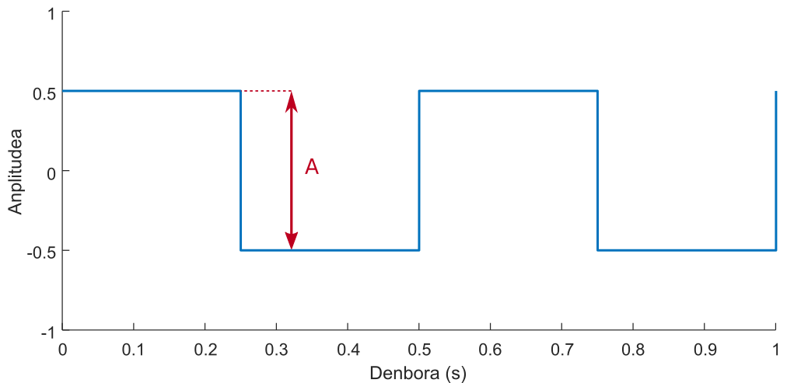
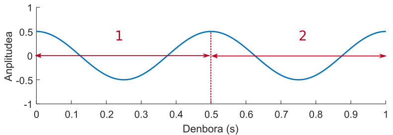

Uhin karratua sortu
Modulo honek segundo bateko iraupeneko uhin karratuko seinale bat sortzen du. Anplitudea, maiztasuna, fasea eta ziklo aktiboa hautatu ahal dira.
Interfazea

-
Aurrebista leihoa:Moduluak sortuko duen seinalea ikusteko aukera ematen du. Parametroren baten balioa aldatzean eguneratzen da.
-
Anplitude-hautagailua: Uhin karratuaren anplitudea 0 eta 1 artean aldatzea ahalbidetzen du. Balioa alda daiteke kurtsorea irristatuz edo testu-kutxaren balioa aldatuz.
-
Maiztasun-hautagailua: Uhin karratuaren maiztasuna 1 eta 20000 Hz artean aldatzea ahalbidetzen du. Balioa alda daiteke kurtsorea irristatuz edo testu-kutxaren balioa aldatuz.
-
Fase-hautagailua: Uhin karratuaren fasea −π-ren eta π-ren artean aldatzeko aukera ematen du. Balioa alda daiteke kurtsorea irristatuz edo testu-kutxaren balioa aldatuz.
-
Ziklo aktiboko hautagailua: Uhin karratuaren ziklo aktiboa % 10 eta % 90 artean alda daiteke.
-
"Sortu" botoia: Beste bistaratze-leiho bat irekitzen du, hautatutako parametroak dituen seinale bat aztertzeko, segundo bateko iraupenekoa.
Uhin karratua
Uhin karratua bi mailen arteko bat-bateko trantsizioen bidez eratzen den uhin periodiko bat da.
Konfiguratu daitezkeen parametroak honako hauek dira:
-
Anplitudea: Bi mailen arteko aldea.
|

|
| Adibide honetan anplitudea 1 da.
|
-
Maiztasuna: Segundo 1-ean sartzen diren ziklo kopurua, Hz-n neurtuta. (Informazio gehiago nahi izanez gero, sakatu hemen).
-
Fasea: Seinalea jatorrizko posizioarekiko lekualdatzea. (Informazio gehiago nahi izanez gero, sakatu hemen).
-
Ziklo aktiboa: Seinalea goiko mailan (edo maila aktiboan) dagoen periodoaren zatia. Kasu honetan, ehuneko batean neurtzen da, periodoaren guztizko iraupenarekiko.


Informazio gehiago
-
Maiztasuna: Denbora tarte batean seinale-ziklo oso bat zebat aldiz errepikatzen den adierazten du. Hertzetan neurrituta, segundu batean seinale-ziklo baten errepikapen kopurua.
|

|
| Adibide honetan maiztasuna 2 Hz-ekoa da.
Adibide honetan maiztasuna 2 Hz-ekoa da.
|
-
Fasea: Cosinuaren desplazamendua. Radianetan neurtzen da, seinale-ziklo oso bat 2π radian izanez.

|
| Adibide honetan seinalea ziklo ¼-a desplazatuta dago. Beraz, fasea π/2 rad-ekoa da.
|